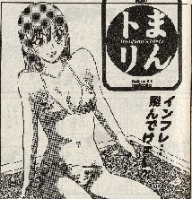
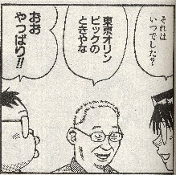
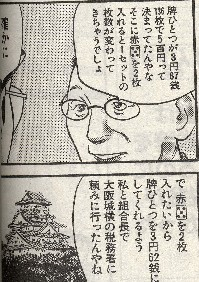

ドラ05・赤牌
|
赤牌はいつ頃、どのような経緯で生まれたのでしょうか。
|
これには２説あります。一つは1970（s45）年、大阪で万国博覧会が開催されたとき、シンボルマークである桜の花をもじって考案され、
関西のブー麻雀で使用され始めたというもの。
桜をかたどた五つの花びらは、世界の5大州を意味し、
中央の円は日の丸をあらわしている。日本に世界の人が集まり、
進歩と調和を果たすことを象徴しています。
もう一つは、1964（s39）年、東京オリンピックのとき、五輪マークをもじって考案されたというもの。しかし赤５筒が大阪に発祥したことは
確かです。そこで大阪万博に由来するという説の方が有力と思います。いずれにしても一般大衆の中から自然に生まれたのではなく、ブー
雀荘が射幸心をアップする為に考案したように思われます。
|
九州地方には赤の ３ があるそうですが、なぜ九州地方だけ ３ なのでしょうか。
|
赤３を使っているのは九州だけではありません。
しかし九州でもっとも使用されているとすれば、赤３が最初に考案されたのが九州だったかも知れません。
|
赤牌が万索筒で４枚ある時、なぜ筒子だけが２枚なのでしょうか。
|
赤牌が４枚ある時、 だけ２枚なのは、最初に赤牌ができたとき が２枚だったからだというだけのことと思います。 だけ２枚なのは、最初に赤牌ができたとき が２枚だったからだというだけのことと思います。
|
赤牌はのほかに も定番ですが、 も定番ですが、    もあります。 もあります。
これらも関西のブー麻雀から発生してきたのでしょうか。
|
ブーマンは関西から西国方面に広がってゆく中でスポーツ麻雀と呼ばれました。
以外にも関西のブーマンから直接できたものもあるかも知れませんが、多くはそのスポーツ麻雀から派生してきたものと思われます。
また名古屋には赤 、赤 、赤 、赤 、赤 もありますが、九州へ行くともあります。 もありますが、九州へ行くともあります。
|
すると赤牌は一度にいろいろな種類ができたのではなく、徐々に出来てきたのでしょうか。
|
そう思います。
まずは大阪万博をきっかけにが作られた。そのうち“だけでは...”というので、 も作られた。
さらに“赤５では全帯（チャンタ）のときに使用できない”というので、 赤が作られた。その関連で が作られた
と考えられます。
おまけにここまで行くと、“何牌を赤く塗っったって構わない。とにかくギャンブル性大きくしよう”というので、赤、赤、赤、
などが作られるようになったと思います。
赤牌については、
（１）最初はだけだった。のちに/赤ができた。
（２）最初から赤/赤/赤が考案された。しかし関東では、関西・九州では３というように、地方によって好まれた牌が異なって普及した。
などの説もあります。
|
赤牌は全国どこでも１枚一翻でしょうか。
|
基本的には、そうだと思います。しかし同じ一翻でもドラと同じ扱いであったり（アガリ役にならない）、
翻牌とおなじ感覚の一翻であったりするようです。
また を同時に３枚、手牌で使ってアガると跳ね満となったりするなど、ルールはさまざまです。
たとえば、名古屋の某フリー雀荘では、次の手を でアガると、タンヤオ（１）/サンシキ（１）/赤３（赤ゾロ（８）で倍満となります。 でアガると、タンヤオ（１）/サンシキ（１）/赤３（赤ゾロ（８）で倍満となります。
      ロン ロン
※この雀荘では赤、赤、赤も入っているので、  とか とか という形になると、赤牌の両門待ちになります。 という形になると、赤牌の両門待ちになります。
|
このコラムのトップで、 は大阪万博を機に誕生したという説と、東京オリンピックを機に誕生したという説の２説あるが、
大阪万博説の方が有力と書いた。しかしそれを訂正する。
月刊近代麻雀に、まんトリ（まーじゃんトリビアの略）というコーナーがある。云うまでもなくいま流行の「トリビアの泉」に
ならった企画で、毎回、福地ハカセが麻雀の雑知識を解明してゆくというコーナー。

サービス(^-^；
その今月号（H16.9月号VOL472）で、の起源が解明されていた。それによると、初めてを製造したのは、大阪のミズノ 丸一
という会社とのこと。1964（s39）年、東京オリンピックを機に製造したものだという。
当時、麻雀牌１セットにつき500円の税金（トランプ類税）を取られた。これを136枚で除すると１枚が３円67銭ということになる。
予備の白牌（はくハイ）と、ゲームに使用しない花牌は税金の対象ではなかったが、 はゲームに使うための牌。
それを２枚入れると、税金が７円35銭ほど高くなる。そこで大阪の税務署に、これまで通り、総額500円（結果的に１枚あたり３円62銭となる）
のままにしてほしいと頼みに行ったというエピソードがあるそうだ。

ということで、の誕生については、これにて一件落着〜。
|
keito 投稿日：2004/10/12(Tue)
また質問させてください。今回は赤ドラについてです。
赤ドラ有りでドラ・裏ドラが共に だった場合、 は４役になるのでしょうか？ だった場合、 は４役になるのでしょうか？
なんとなく、赤牌はドラ表示とは関係ない特殊なドラなので「赤の分は単独で先に数えて、裏ドラを数える時には赤牌効果は
すでに消えている（赤ドラは一回しかカウントしない）」なんて考え方も出来るのではないかなと思ったもので・・・＾＾；
|
あさみ 投稿日：2004/10/12(Tue)
こんにちわ、keitoさん
これは「表ドラがなら１枚２役（ダブドラ）になる。そしてもし裏ドラもなら、裏ドラの方でも赤ドラと裏ドラがダブっているとして、
合計４役になるのか？」という意味ですよね。
赤牌麻雀のことは詳しくないので、よく分かりませんが（なにせσ(-_-)はやらないので(^-^；)）。
しかしまぁ、赤牌は１枚１役。そこで表ドラがであれば、 はダブドラとして１枚２役。しかし裏ドラもであっても、
赤牌効果は既に消えているので（赤ドラは一回しかカウントしない）、合計３役ということになるのではないかと思うのですが...
|